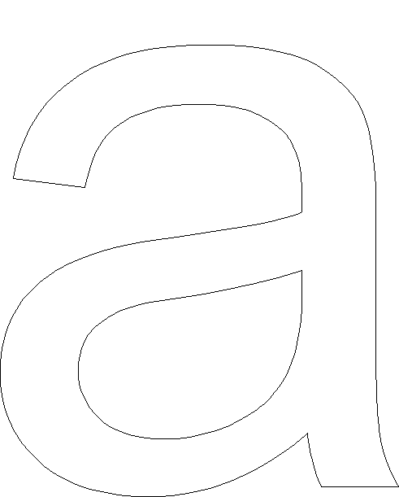
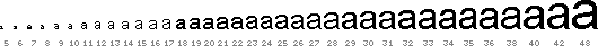
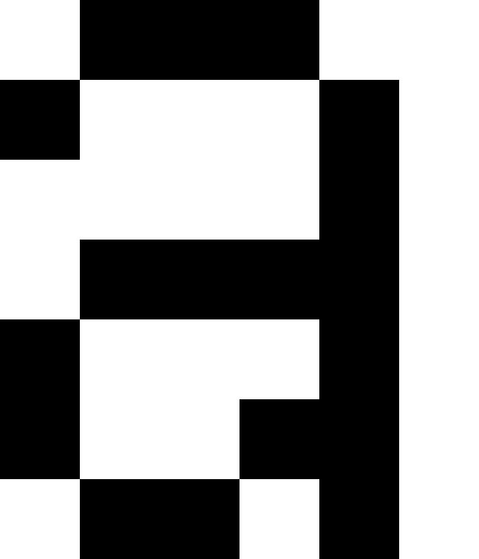
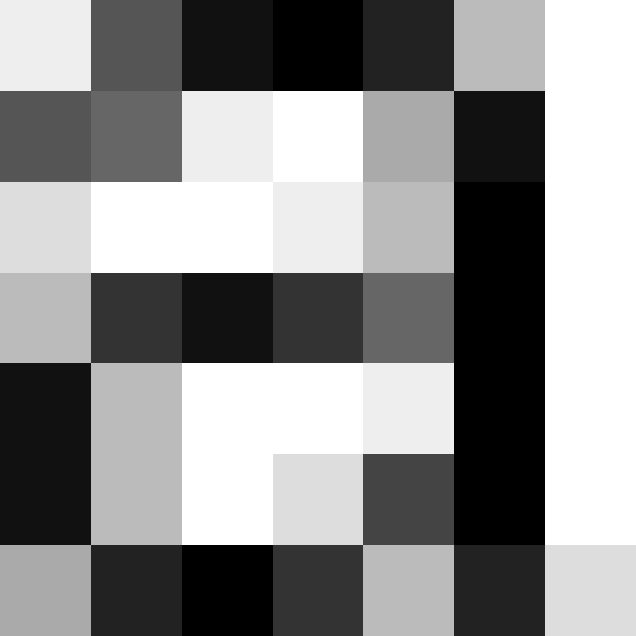

Technologie · Fontdarstellung
Content
Darstellung von Fonts
Vektor zu Pixel
Heutige Fonts bestehen meist aus Vektor-Daten, die dann für die Anzeige an einem Ausgabegerät in eine Pixel-Matrix umgesetzt werden müssen. Diese Umrechnung von Vektoren zu Pixel kann auf verschiedene Arten geschehen. Die dafür zuständige Software wird Renderer genannt und ist je nach Hersteller unterschiedlich und liefert für die selben Vektoren unterschiedliche Ergebnisse.

Font als Outline
Microsoft Arial Unicode

12 Pixel Höhe (PPM) – S/W
Gerendert werden alle Pixel die zu mindestens 50% innerhalb der Kontur liegen (ohne Hinting).
Auflösung
Je höher die Auflösung eines Buchstaben ist, um so klarer nähert sich die Pixel-Darstellung an die Vektorform an. Eine höhere Auflösung pro Buchstabe kann erreicht werden, indem die Grösse des Buchstabens oder die Auflösung des Ausgabegeräts erhöht wird.

MS-Renderer – S/W 8 bis 48 Pixel Höhe (PPM)
Microsoft Arial Unicode (mit Hinting)
Darstellung ohne Graustufen

8 bis 18 Pixel Höhe (PPM)
MS-Renderer – S/W
Microsoft Arial Unicode
Bei kleinen Schriften oder aber bei gewissen Display-Technologien kann es sinnvoll sein, Schrift nur mit S/W darzustellen.

8 Pixel Höhe (PPM)
Microsoft Arial Unicode – MS-Renderer – S/W

24 Pixel Höhe (PPM)
Microsoft Arial Unicode – MS-Renderer – S/W
Unterschiede im Rendering
Bei der S/W-Darstellung von Schrift sind die Unterschiede zwischen verschiedenen Renderern viel weniger stark erkennbar als bei einer Darstellung mit Graustufen.

FreeType-Renderer – S/W
13 Pixel Höhe (PPM) – Microsoft Arial Unicode

MS-Renderer – S/W
13 Pixel Höhe (PPM) – Microsoft Arial Unicode

Apple-Renderer – S/W
13 Pixel Höhe (PPM) – Microsoft Arial Unicode
Hinting
Über spezielle Instruktionen wird die Kontur einer Schrift so verformt, dass die Darstellung besser auf ein Pixel-Grid passt. Danach wird diese neue Kontur vom Renderer gerastert. Die Verformung ist auch so optimiert, dass zum Beispiel die x-Höhe über einen ganzen Font hinweg in allen Zeichen gleich hoch erscheint.
Font als Outline
Microsoft Arial Unicode
Hinting – 12 Pixel Höhe (PPM)
Konturen werden optimiert für Rasterung.


TrueType vs. PostScript
Da der Aufwand einen Font mit guten Hints (Anweisungen) zu versehen sehr gross ist, sind nicht alle Fonts gleich gut optimiert und somit auch in der Qualität der Anzeige extrem verschieden. Häufig werden Schriften, die vorwiedgend für den Druck gezeichnet wurden, lediglich über eine automatische Hinting-Funktion optimiert. Dies führt nicht zu der selben Qualität in der Anzeige, wie wenn die Instruktionen von Hand eingefügt wurden. PostScript basierte Schriften (OpenType PS & PostScript Type 1) ermöglichen weniger genaues Hintig wie TrueType basierte Schriften (OpenType TT & TrueType).
TrueType mit von Hand eingefügten Hints
Microsoft Arial Unicode
Die Stammstärken des Buchstaben wachsen gleichmässig an.
Autohints in PostScript
AMB Newut Medium
 Stammstärken und Schriftlinie wirken nicht durchgehend.
Stammstärken und Schriftlinie wirken nicht durchgehend.
Darstellung mit Graustufen

8 bis 18 Pixel Höhe (PPM)
MS-Renderer – Graustufen
Microsoft Arial Unicode
Oft wird im Web und bei eBooks eine Darstellung der Schrift mit Schriftglättung gewählt. Die Schrift erscheint weicher aber auch besser lesbar. Charaktereigenschaften in Zeichen können mit Graustufen auch in einem Pixel-Raster mit wenig Auflösung relativ gut erahnt werden.

8 Pixel Höhe (PPM)
Microsoft Arial Unicode – MS-Renderer – Graustufen

24 Pixel Höhe (PPM)
Microsoft Arial Unicode – MS-Renderer – Graustufen
Unterschiede im Rendering
Bei der Darstellung von Zeichen mit Graustufen wird je nach eingesetztem Renderer der Unterschied zwischen den einzelnen Technologien sehr deutlich sichtbar.

FreeType-Renderer – Graustufen
13 Pixel Höhe (PPM) – Microsoft Arial Unicode

MS-Renderer – Graustufen
13 Pixel Höhe (PPM) – Microsoft Arial Unicode

Apple-Renderer – Graustufen
13 Pixel Höhe (PPM) – Microsoft Arial Unicode
Darstellung mit Subpixel-Rendering
Bei der Darstellung mit Subpixeln wird die Schrftglättung nicht nur über verschiedene Graustufen erzeugt, sondern auch noch der Vorteil ausgenutzt, dass ein Bildschirm in horizontaler Richtung eine dreifach grössere Auflösung besitzt, da die RGB-Darstellung über drei Farb-Zustände in horizontaler Richtung geschieht. Dadurch wird die Darstellungsqualität wesentlich verbessert.
 Schematische Darstellung ohne Glättung
Schematische Darstellung ohne Glättung
Bildquelle: Subpixel-Rendering – Wikipedia
 Schematische Darstellung mit Subpixel-Rendering
Schematische Darstellung mit Subpixel-Rendering
Apple-Renderer – S/W
Microsoft Arial Unicode – 12 Pixel Höhe (PPM)

Apple-Renderer – Subpixel
Microsoft Arial Unicode – 12 Pixel Höhe (PPM)

Farbige Fonts
Es gibt vier verschiedene Möglichkeiten, wie in einem OpenType-Font farbige Elemente definiert werden können. Abweichende «Standards» wurden jeweils separat von folgenden Parteien entwickelt;
- Microsoft (COLR/CPAL)
- Apple (SBIX)
- Google (CBDT/CBLC)
- Adobe/Mozilla (SVG)
Da es somit technisch kompliziert ist für einen Renderer alle vier Definitionen zu unterstützen, ist die Verbreitung von farbigen Fonts sehr gering. Betriebsysteme bieten üblicherweise einen farbigen Emoji-Font, passend auf das jeweilige Betriebsystem, an. Jedoch gibt es darüber hinau wenige Fonts, die diese Technologie nutzen, da es auch für Schriftgestalter technisch mühsam ist alle Standards zu unterstützen.
Einfärben

Einige Technologien unterstützen auch das Einfärben einzelner Layer oder Teile.
Bildquelle: Typography.Guru – Color Emoji
Fallback

Farbige Fonts können nur von wenigen Programmen angezeigt werden. Renderer die Farbige Fonts nicht unterstützen zeigen lediglich die S/W-Version an.

Ist der Renderer in der Lage die neuen Instruktionen im Font zu lesen, so kann die farbige Version angezeigt werden.
Autor
Stefan Huber
sh@signalwerk.ch
+41 78 744 37 38
Dokumentgeschichte
Mai 2014: Erstellung
September 2015: Erweiterung
März 2017: Erweiterung